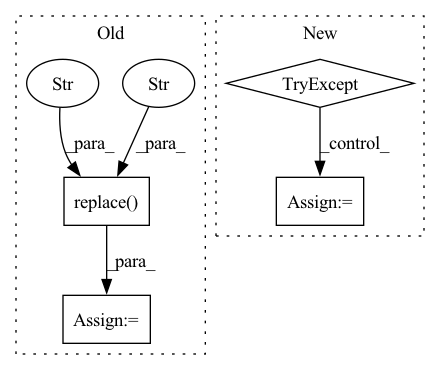

Pattern ID :37358

Before Change
"_x" + str(upscale_factor) +
".png")
else:
result_path = (img.replace(".png","") +
"_" + AI_model +
"_x" + str(upscale_factor) +
".png")
After Change
ErrorMessage(error_root, "upscale_problem")
def torch_AI_upscale_video_frames(video_frames_list, AI_model, upscale_factor, device):
try:
// 0) define the model
model = prepare_torch_model(AI_model, device)
optimize_torch(device)
// 1) resize all images
downscaled_images = []
for image in video_frames_list:
img_downscaled = resize_image(image, upscale_factor)
downscaled_images.append(img_downscaled)
for img in downscaled_images:
result_path = (img.replace("_resized.png","").replace(".png","") +
"_" + AI_model +
"_x" + str(upscale_factor) +
".png")
// 2) calculating best slice number
img_tmp = cv2.imread(img)
val = min(img_tmp.shape[1], img_tmp.shape[0])
num_tiles = round(val/cut_image_factor)
if (num_tiles % 2) != 0:
num_tiles += 1
// 3) divide the image in tiles
tiles = slice_image(img, num_tiles)
// 4) upscale each tiles
with torch.no_grad():
In pattern: SUPERPATTERN
Frequency: 3
Non-data size: 4
Instances
Fragment ID: 107500425
Project Name: djdefrag/qualityscaler
Commit Name: 66cef0855cfbe41b27938a88cd316575f61f5507
Time: 2022-05-04
Author: jjluca96@gmail.com
File Name: QualityScaler.py
M Class Name: AnonimousClass
N Class Name: AnonimousClass
M Method Name: torch_AI_upscale_video_frames(4)
N Method Name: torch_AI_upscale_video_frames(4)
M Parent Class:
N Parent Class:
M File Name: QualityScaler.py
N File Name: QualityScaler.py
M Start Line: 620
M End Line: 673
N Start Line: 416
N End Line: 465
'>
Before Change
"_x" + str(upscale_factor) +
".png")
else:
result_path = (img.replace(".png","") +
"_" + AI_model +
"_x" + str(upscale_factor) +
".png")
After Change
return model.to(backend, non_blocking=True)
def torch_AI_upscale_multiple_images(image_list, AI_model, upscale_factor, device):
try:
// 0) define the model
model = prepare_torch_model(AI_model, device)
optimize_torch(device)
// 1) resize all images
downscaled_images = []
for image in image_list:
img_downscaled = resize_image(image, upscale_factor)
downscaled_images.append(img_downscaled)
for img in downscaled_images:
result_path = (img.replace("_resized.png","").replace(".png","") +
"_" + AI_model +
"_x" + str(upscale_factor) +
".png")
// 2) calculating best slice number
img_tmp = cv2.imread(img)
val = min(img_tmp.shape[1], img_tmp.shape[0])
num_tiles = round(val/cut_image_factor)
if (num_tiles % 2) != 0:
num_tiles += 1
// 3) divide the image in tiles
tiles = slice_image(img, num_tiles)
'>
Fragment ID: 107500428
Project Name: djdefrag/qualityscaler
Commit Name: 66cef0855cfbe41b27938a88cd316575f61f5507
Time: 2022-05-04
Author: jjluca96@gmail.com
File Name: QualityScaler.py
M Class Name: AnonimousClass
N Class Name: AnonimousClass
M Method Name: torch_AI_upscale_multiple_images(4)
N Method Name: torch_AI_upscale_multiple_images(4)
M Parent Class:
N Parent Class:
M File Name: QualityScaler.py
N File Name: QualityScaler.py
M Start Line: 563
M End Line: 616
N Start Line: 364
N End Line: 414
'>
Before Change
if char.startswith("uni"):
char = char.replace("uni", "\\u")
elif char.startswith("uF"):
char = char.replace("uF", "\\u")
else:
continue
char_utf8 = char.encode("utf-8")
try:
char_escape = char_utf8.decode("unicode_escape")
except UnicodeDecodeError:
After Change
char_int = int(char, base=16)
except ValueError:
continue
try:
char = chr(char_int)
except ValueError:
continue
res.add(char)
'>
Fragment ID: 107500430
Project Name: euphoriayan/zi2zi-pytorch
Commit Name: c756543761d62051dfb45c1c0a887ddb2656eba7
Time: 2020-09-28
Author: ysq58000@foxmail.com
File Name: massive_font2img.py
M Class Name: AnonimousClass
N Class Name: AnonimousClass
M Method Name: processGlyphNames(1)
N Method Name: processGlyphNames(1)
M Parent Class:
N Parent Class:
M File Name: massive_font2img.py
N File Name: massive_font2img.py
M Start Line: 79
M End Line: 91
N Start Line: 79
N End Line: 96